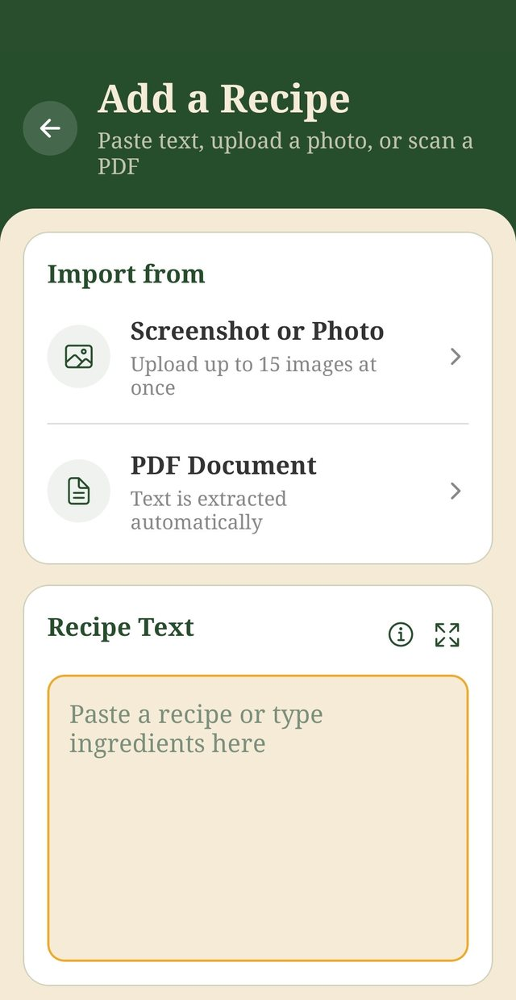

How to Add Recipes to Dishlo: Screenshots, Photos, PDFs, and Pasted Text
Dishlo doesn’t come with recipes. You bring your own, and that’s kind of the point. Here’s how to get them in, a few tips that make it easier, and what to expect along the way.
Coming from Mealime? Mealime shut down on October 21. If you saved your favorites as screenshots before the cutoff, you might start with where to take your saved recipes, then come back here for the how-to.
The four ways in
Every recipe in Dishlo is one you added yourself, and there are four ways to do it. Whichever you choose, it ends the same friendly way: Dishlo reads the text, pulls out the ingredients, instructions, and servings, and shows it to you to review before anything is saved. If something needs a tweak, you can edit the recipe then, or any time later.
- Screenshot. Perfect for a recipe that’s on your screen right now, including the screenshots you rescued from another app. Just make sure the ingredients and the instructions are visible, and the full ingredient list isn’t cropped. If the recipe runs long, take two or three screenshots; you can add up to 15 images at once. One small tip that really helps the reading: try not to let your screenshots overlap. If the same lines appear in two shots, the reader can get confused. Lining them up edge to edge gives you a much cleaner result.
- Photo of a printed page. A cookbook, a magazine, a printed recipe card: if it’s printed, it can come with you. Lay the page flat, hold the phone straight on, and find some decent light. Blurry or angled shots don’t read as well, and neither does glare across the text.
- PDF. If a recipe already lives in a PDF, like a meal plan download or a scanned cookbook page, just upload the file and Dishlo treats it like any other source. And here’s a helpful hint: lots of recipe blogs and websites have a Print button on the recipe itself. You don’t actually need a printer. Choose “Save as PDF” (sometimes called “Print to PDF”) instead, and you’ll get a clean copy of just the recipe, with no ads and no life story attached. It’s about the easiest file there is for Dishlo to read, and it makes getting a recipe in quick and painless.
- Pasted text. If you’ve got the recipe as text, in a note, an email, or a document, you can simply copy and paste it in. It’s also the most reliable route for recipes that only exist as text.

Sample screen shown.
A few things worth knowing
- Printed text reads best. Dishlo is built for printed text, and it can’t reliably read handwriting. If your recipe is a handwritten card, typing it in (the pasted text route) will get you a much better result than a photo.
- Up to 15 images at once. That’s plenty for even a long recipe with lots of steps.
- There’s no importing from links, on purpose. Dishlo never pulls recipes from websites, because recipes belong to the people who wrote them. You add the content yourself, from sources you have access to. The source field on each recipe is there so you can credit and remember where it came from.
- The review step is there to help you. Nothing lands in your recipe box without your eyes on it first. Give the amounts a quick check, fix anything the scan misread, and then save with confidence.
Where to start
There’s no need to move your whole collection in one sitting. A nice way to begin is simply to bring in your favorites, the recipes you make all the time, and get started: put a few of them on this week’s plan and let Dishlo build the grocery list. Once you’ve cooked from it once, the rhythm clicks. From there, just add more recipes whenever you reach for one that isn’t there yet, and your collection grows at exactly the pace you cook.
Then the rhythm takes over
This is the heart of Dishlo, the loop every recipe you add feeds into:
- Plan: recipes on the calendar, breakfast, lunch, dinner, or snack, with servings set per meal.
- Generate: one grocery list built from the whole plan, with ingredients combined and sorted by store category.
- Shop: Shop Mode gives you big, legible text, tap to check items off, and a screen that stays awake by default. Ordering online instead? Tap any item’s name and it’s copied to your clipboard. Paste it straight into your grocery store’s search bar, hop back, and copy the next one. It makes jumping back and forth between your list and a pickup or delivery order genuinely quick. (There’s a button to copy the whole list at once, too, if you’d rather take it all in one go.)
- Cook: Cook Mode keeps steps in large type, ingredients one tap away, and a built-in timer close at hand.
Your recipes, plans, and lists are private to your account. No ads. We don’t sell your data.
Get started
Dishlo is $6.99/month in the US (price varies by country; taxes may apply), after a 14-day free trial for eligible new subscribers. The subscription auto-renews until cancelled in your Google Play subscription settings. Cancel before the trial ends and you pay nothing. Deleting the app does not cancel your subscription. Dishlo is live on Google Play for Android; an iPhone version is planned, with no date announced.